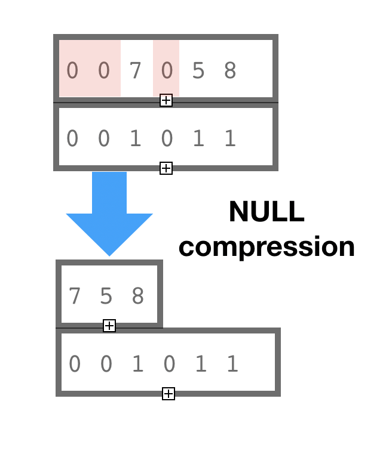

Version 6.4.0
May 12, 2020Release Notes
-
New algorithm
bm::rank_range_split(...)(bmalgo.h) to determine N non-overlapping ranges with the same rank (population count). See example: bvsample24.cpp New algorithm can be used for planning of parallel processing when bit-vector defines a pool of tasks which needs to be broken into a few sub-groups based on equal weight.
Code example
#include "bm.h" #include "bmalgo.h" using namespace std; typedef bm::bvector<>::size_type bv_size_type; typedef std::vector<std::pair<bv_size_type, bv_size_type> > bv_ranges_vector; const unsigned ranges = 3; // split into 3 ranges bm::bvector<> bv { 10, 20, 100, 200, 300, 655000, 7890000 }; bv_size_type cnt = bv.count(); bv_size_type split_rank = cnt / ranges; // target population count bv_ranges_vector pair_vect; bm::rank_range_split(bv, split_rank, pair_vect);bm::aggregator<> -
New
bm::bvector<>::enumeratorconstructor to takeconst bm::bvector<>&reference. -
Rank-Select compressed container
bm::rsc_sparse_vector<>constructor to explicitly define its NOT NULL values. This new mode is for use case when RSC container values are known and can now be randomly assigned using rank-select index for address compute acceleration. This new mode is times faster for construction of compressed containers in compact memory. See technical notes below for more details. rscsample04.cpp -
Fixed bug in
bm::sparse_vector_find_first_mismatch(..)algorithm -
improved compilers support of
[[fallthrough]]in a Clang corner case (thanks to Aaron Ucko) -
fixed compilation issues related (GCC) related to handling of
__attribute__((always_inline))(forced inline)
Download v6.4.0 (Sourceforge) GitHub
Technical notes on Rank-Select sparse vector
Rank-Select Succinct data representation is also known as “NULL values compression”. This is not a truly compression method, it is a succinct method. The terminological difference between compression and succinct is our ability to access the data in compressed form (with some penalty) without decoding the whole data block or compression page.

BitMagic implementation of Rank-Select compressed vector combines two methods: NULL compression implemented with Rank-Select method AND bit-transposition. Bit transposition implements a succinct variant of variable bit codec.
Combination of both methods in one container allows to achieve better in-memory compation without loosing ability to search and access data, trading CPU penalty for memory and disk storage efficiency.
Rank-Select compressed container is useful for basic Information Retrieval problems of TF-IDF (term frequency inverse document frequency) analysis. Performance of random access to container elements on the indexing phase can be very limiting. It was noticed that there are use cases when we know the vector index composition (not NULL elements) up front. In other words, we know our terms dictionary (but not frequency of occurrence of each term) and we can exploit this knowledge by pre-initializing the RSC vector and building a Rank-Select index. Later update of terms frequencies on known elements would run significantly faster.
Code snippet on how to use "known NULL" RS-index assisted access mode
typedef
bm::sparse_vector<unsigned, bm::bvector<> > sparse_vector_u32;
typedef
bm::rsc_sparse_vector<unsigned, sparse_vector_u32> rsc_sparse_vector_u32;
int main(void)
{
// vector of not NULL elements
bm::bvector<> bv1 { 10, 20, 100, 200, 65536 };
rsc_sparse_vector_u32 csv1(bv1);
csv1.sync(); // build Rank-Select index for faster access
bv1.clear(); // we don't need bv1 anymore
// modify vector elements but only touch the not NULL elements
// for fast access
//
csv1.set(100, 1);
csv1.set(20, 1);
csv1.inc(10);
csv1.inc(65536, 1);
assert(csv1.in_sync()); // Rank-Select index works after changes
...
}
Please note that RSC container handles "contract violation", so if you start modifying "wrong" elements it will just disable RS-index and just use regular slow mode. One possible future improvement would be to update and maintain the RS-index on the fly - this is an area of improvement for BitMagic.
Performance measurements
BitMagic 6.4.0 implements a synthetic benchmark measuring the effects of known element access. As you can see new mode makes it run orders of magnitude faster, allowing fast term-frequency counting in compact memory.
RS-index assisted access benefits from SIMD acceleration with SSE4.2 or AVX2/BMI2. A quick note on BMI2. The measurements listed here were taken using Intel CPU, where BMI2 is faster than AMD Zen architecture. In our experince the relative weakness of BMI2 on AMD does not preclude from using it in pratical applications, hopefully AMD will make steps to improve performance of BMI2 instructions in their future CPUs.